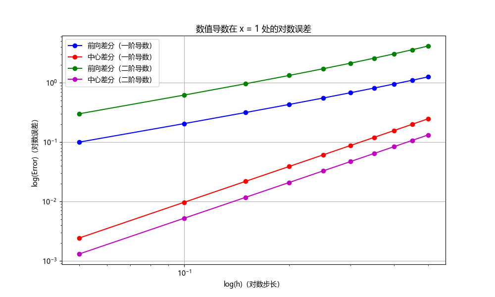

求导数¶
(a)前向差分和中心差分¶
考虑函数\(f(x) = x\cosh(x)\)在\(x = 1\)时的一阶和二阶导数。当\(h = 0.50, 0.45,\cdots, 0.05\)时，使用前向差分和中心差分公式进行计算。绘制对数误差与对数\(h\)的关系图。将你的结果与理查森外推法的结果进行比较。
前向差分的数值计算公式为
再进行一次前向差分即得到二阶导的数值计算公式
中心差分的数值计算公式为
再进行一次中心差分即得到二阶导的数值计算公式
使用python实现上述计算，首先引入必要的库
import numpy as np
import matplotlib.pyplot as plt
import matplotlib
# 设置字体为Microsoft YaHei
matplotlib.rcParams['font.sans-serif'] = ['Microsoft YaHei']
matplotlib.rcParams['font.family'] = 'sans-serif'
plt.rcParams['axes.unicode_minus'] = False
其中matplotlib库用来实现图片中的中文字体显示，然后定义待求函数
定义前向差分的一阶导和二阶导
def forward_difference(f, x, h):
return (f(x + h) - f(x)) / h
def forward_difference_2nd(f, x, h):
return (f(x + 2*h) - 2*f(x + h) + f(x)) / h**2
定义中心差分的一阶导和二阶导
def centered_difference(f, x, h):
return (f(x + h) - f(x - h)) / (2 * h)
def centered_difference_2nd(f, x, h):
return (f(x + h) - 2*f(x) + f(x - h)) / h**2
为了比较误差，再定义导数的解析解
def f_prime(x):
return np.cosh(x) + x * np.sinh(x)
def f_double_prime(x):
return 2 * np.sinh(x) + x * np.cosh(x)
由题意，考虑
处的导数，定义一系列区间长
初始化存储误差的数组
errors_forward_first = []
errors_centered_first = []
errors_forward_second = []
errors_centered_second = []
进行计算并记录误差
for h in h_values:
# First derivative
error_forward_first = np.abs(f_prime(x0) - forward_difference(f, x0, h))
error_centered_first = np.abs(f_prime(x0) - centered_difference(f, x0, h))
errors_forward_first.append(error_forward_first)
errors_centered_first.append(error_centered_first)
# Second derivative
error_forward_second = np.abs(f_double_prime(x0) - forward_difference_2nd(f, x0, h))
error_centered_second = np.abs(f_double_prime(x0) - centered_difference_2nd(f, x0, h))
errors_forward_second.append(error_forward_second)
errors_centered_second.append(error_centered_second)
绘制误差图
plt.figure(figsize=(10, 6))
plt.loglog(h_values, errors_forward_first, 'b-o', label='前向差分（一阶导数）')
plt.loglog(h_values, errors_centered_first, 'r-o', label='中心差分（一阶导数）')
plt.loglog(h_values, errors_forward_second, 'g-o', label='前向差分（二阶导数）')
plt.loglog(h_values, errors_centered_second, 'm-o', label='中心差分（二阶导数）')
plt.xlabel('log(h)（对数步长）')
plt.ylabel('log(Error)（对数误差）')
plt.title('数值导数在 x = 1 处的对数误差')
plt.legend()
plt.grid(True)
plt.show()
输出为

可见中心差分的两条线处于下方，这说明中心差分法的精度更高。
在\(h=0.05\)时，两种算法的计算结果如下
| 前向差分法 | 中心差分法 | 解析解 | |
|---|---|---|---|
| \(f^{\prime}(x)\) | 2.8180704090254816 | 2.720700809506029 | 2.718281828459045 |
| \(f^{\prime\prime}(x)\) | 4.19309339467615 | 3.894783980778093 | 3.8934830221028465 |
与解析解比较，也可以看出中心差分法的优势。
(b)导数估算¶
使用二点、三点和五点公式估算\(f(x)\)在\(x = 0\)处的前五个导数。
两点公式为
三点公式为
五点公式为
为了求五个导数，使用递归方式进行计算，为了实现递归，使用sympy进行计算，导入
定义自变量和函数，并选定区间长度\(h=1/2\)
定义好上述三种数值计算公式
f_prime_2p = (f.subs(x, x + h) - f.subs(x, x - h)) / (2 * h)
f_prime_3p = (-3 * f.subs(x, x) + 4 * f.subs(x, x + h) - f.subs(x, x + 2 * h)) / (2 * h)
f_prime_5p = (-25 * f.subs(x, x) + 48 * f.subs(x, x + h) - 36 * f.subs(x, x + 2 * h) + 16 * f.subs(x, x + 3 * h) - 3 * f.subs(x, x + 4 * h)) / (12 * h)
计算出\(x=0\)处函数的值
f_prime_2p_at_0 = f_prime_2p.subs(x, 0).evalf()
f_prime_3p_at_0 = f_prime_3p.subs(x, 0).evalf()
f_prime_5p_at_0 = f_prime_5p.subs(x, 0).evalf()
f_prime_2p_at_0, f_prime_3p_at_0, f_prime_5p_at_0
其中f.sub(x,x0)的作用是将\(x=x_0\)代入\(f(x)\)。定义数值微分函数
def numerical_derivative(formula, f, x_val, order, h=1/2):
if order == 0:
return f.subs(x, x_val).evalf()
elif formula == '2p':
return (numerical_derivative(formula, f, x_val + h, order - 1) - numerical_derivative(formula, f, x_val - h, order - 1)) / (2 * h)
elif formula == '3p':
return (-3 * numerical_derivative(formula, f, x_val, order - 1) + 4 * numerical_derivative(formula, f, x_val + h, order - 1) - numerical_derivative(formula, f, x_val + 2 * h, order - 1)) / (2 * h)
elif formula == '5p':
return (-25 * numerical_derivative(formula, f, x_val, order - 1) + 48 * numerical_derivative(formula, f, x_val + h, order - 1) - 36 * numerical_derivative(formula, f, x_val + 2 * h, order - 1) + 16 * numerical_derivative(formula, f, x_val + 3 * h, order - 1) - 3 * numerical_derivative(formula, f, x_val + 4 * h, order - 1)) / (12 * h)
计算数值微分并打印出结果
derivatives_2p = [numerical_derivative('2p', f, 0, i) for i in range(1, 6)]
derivatives_3p = [numerical_derivative('3p', f, 0, i) for i in range(1, 6)]
derivatives_5p = [numerical_derivative('5p', f, 0, i) for i in range(1, 6)]
print(derivatives_2p, derivatives_3p, derivatives_5p)
输出为
[1.02520888790112, 0.767566420814180, 1.66319777845131, 5.63557668212560, -53.9587012001399]
[1.78243544510891, 12.7807404146464, -889.817102895411, 21441.3146533666, -274979.895333829]
[-2.42887448547971, 2091.50909425478, 25825.5101162839, -79668571.5208342, 8963687648.42747]
即计算结果为
| 两点法 | 三点法 | 四点法 | |
|---|---|---|---|
| \(f^{(1)}(x)\) | 1.02520888790112 | 1.78243544510891 | -2.42887448547971 |
| \(f^{(2)}(x)\) | 0.767566420814180 | 12.7807404146464 | 2091.50909425478 |
| \(f^{(3)}(x)\) | 1.66319777845131 | -889.817102895411 | 25825.5101162839 |
| \(f^{(4)}(x)\) | 5.63557668212560 | 21441.3146533666 | -79668571.5208342 |
| \(f^{(5)}(x)\) | -53.9587012001399 | -274979.895333829 | 8963687648.42747 |
作为检验，找出整数\(v\)使得\(f^{(v)}(x=0)=-164\)，推荐尝试\(h=1/2^{n}\)
经尝试（改变上面代码里的\(h\)），当\(h=1/2^7=1/128\)时，可以明显看出\(v=5\)，为了报告简洁，下面只展示五阶导的随着精度增加的变化
| 两点法 | 三点法 | 四点法 | |
|---|---|---|---|
| \(h=1/2\) | -53.9587012001399 | -274979.895333829 | 8963687648.42747 |
| \(h=1/4\) | 832.326261015043 | 13500.9702604902 | 874993821.374344 |
| \(h=1/8\) | -515.831500617998 | 1544.22399322511 | -350540.071627955 |
| \(h=1/16\) | -212.357845678449 | -83.1992623781989 | -174.921571695297 |
| \(h=1/32\) | -175.155183893163 | -143.952286900952 | -163.783410527551 |
| \(h=1/64\) | -166.737819869071 | -158.792309030890 | -163.970800751389 |
| \(h=1/128\) | -164.681361675262 | -162.663984537125 | -163.664322812401 |
即\(v=5\)为所求。